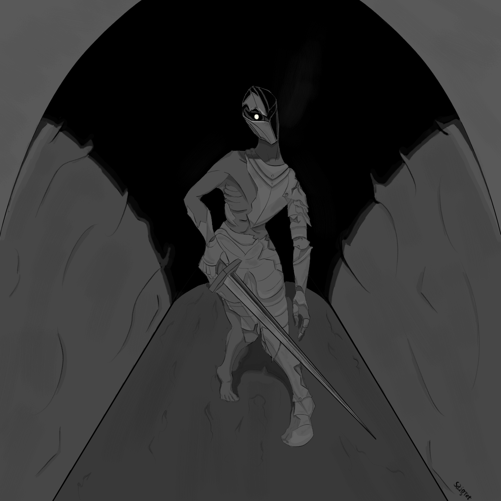

Level 1
Symbolic Mark
A focused visual symbol built around one core idea. Best for personal marks, project emblems, identity seeds, or simple symbolic concepts.
Symbolic Visual Design
I create symbolic artwork for stories, brands, and personal projects that need more than decoration. You bring the idea. I handle the visual translation.
You do not need to have the visual figured out. That is the part I handle.
Who this is for
Covers, story visuals, symbolic objects, and images that express the emotional core of a story.
Visual symbols for projects, identities, themes, and concepts that need to feel memorable.
Symbolic visuals that make an idea, message, or positioning feel clearer and more distinct.
The offer
Most people do not need a random pretty illustration. They need an image that helps their project communicate faster.
My work is built around symbolism, contrast, mood, and composition, so the final image does more than look good. It gives your idea a clear visual form.
Levels of work
Some ideas need a sharp mark. Others need a developed concept. Some need a full symbolic illustration with stronger emotional and narrative weight.
Level 1
A focused visual symbol built around one core idea. Best for personal marks, project emblems, identity seeds, or simple symbolic concepts.
Level 2
A stronger visual metaphor with mood, composition, and emotional direction. Best when your idea needs more than a simple mark.
Level 3
A complete symbolic composition for covers, campaigns, story visuals, or concepts that need deeper narrative impact.
Selected work
Level 1

A compact symbol turning ambition, tension, and upward movement into a clean visual mark.

A fragile shape held inside a dark mass, showing isolation as both protection and prison.

A visual symbol for pressure, instability, and internal collapse.
Level 2

A symbolic piece about threat, pursuit, and the feeling of being watched.

A visual idea about promise, temptation, and the danger hidden inside opportunity.

A symbolic concept about impossible endurance and the refusal to collapse.
Level 3

A composition about fear, confinement, and an overwhelming presence pressing in.

A symbolic cover built around isolation, mental collapse, and the moment before confrontation.

A visual interpretation of control, obedience, and psychological pressure.
Process
You send the story, concept, theme, emotion, or rough direction. It does not need to be perfectly explained.
I reduce the idea into the strongest symbols, mood, contrast, and composition direction.
The final piece gives your idea a visual form that is easier to understand, remember, and share.
Client proof
Project: Psychological story cover
“Saigret successfully captured the story’s tone by conveying the woman’s fear through her facial expression. By enlarging the walls and making them loom over her, the piece effectively captures the ominous presence of the Wall.”
Project: Isolation and confrontation
“The cover perfectly captured the tone of the story... a beacon in darkness where the perceived solitude is about to be broken.”
“Psychologically, it reflects a character isolated in their own mind, about to be confronted at their most desperate moment.”
Project: Control and psychological pressure
“I was very impressed with the quality of Saigret’s artwork. It really brought my story to life in a new way. He did a great job capturing the psychological elements I was trying to convey. If you're looking for someone talented, resourceful, and easy to work with, he’s a fantastic choice.”
Work with me
Send me the concept, story, brand idea, or emotional direction. I will help turn it into a clear symbolic image.
You do not need to know exactly what the image should look like. Send the idea in simple words, and I will help shape the visual direction from there.